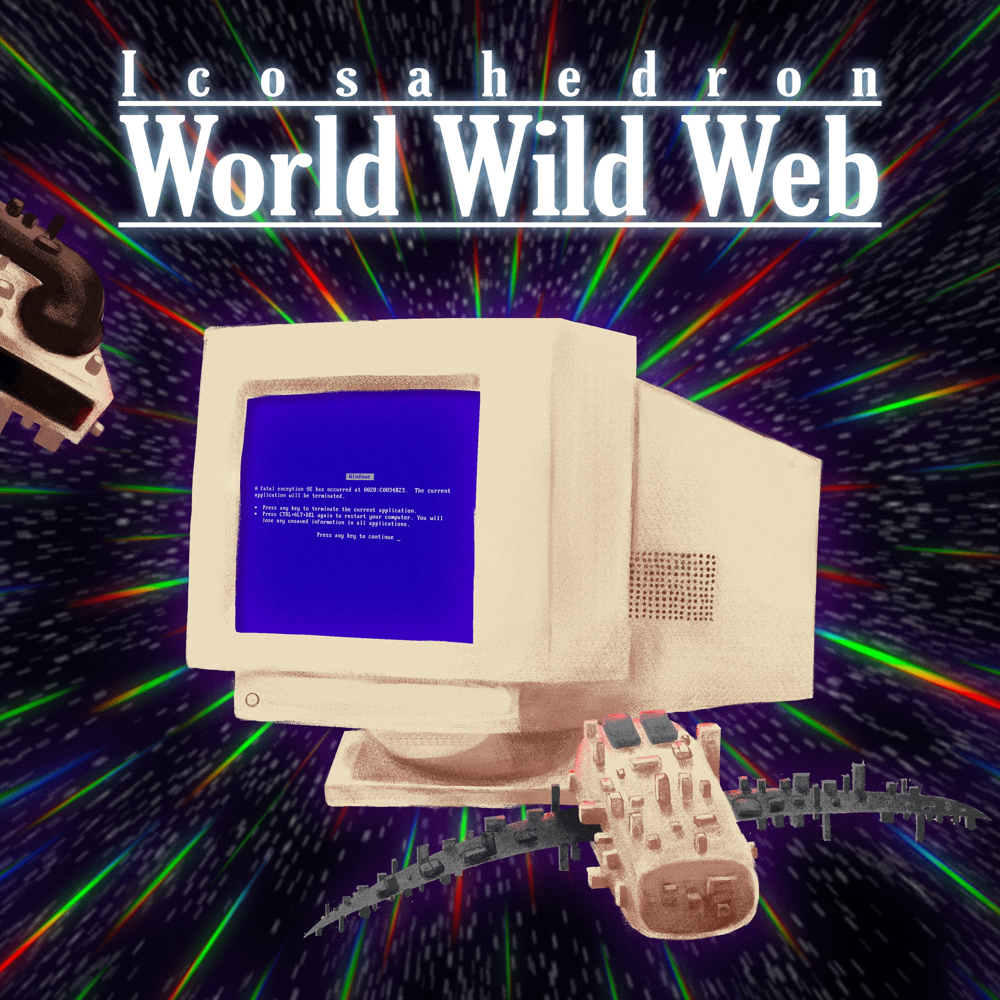

Icosahedron's Second album.
Featuring the following singles:
Really Cool Skeletons
Robot Attack
The Orange Thing (We Call Earth)
Compact Discs and Cassettes
will be available through:
Needlejuice Records
.
While you wait, make a cup of coffee, sit back and relax to my other releases:
My Bandcamp
Follow me on twitter for juicy gossip and updates on World Wild Web:
@letsmoo06